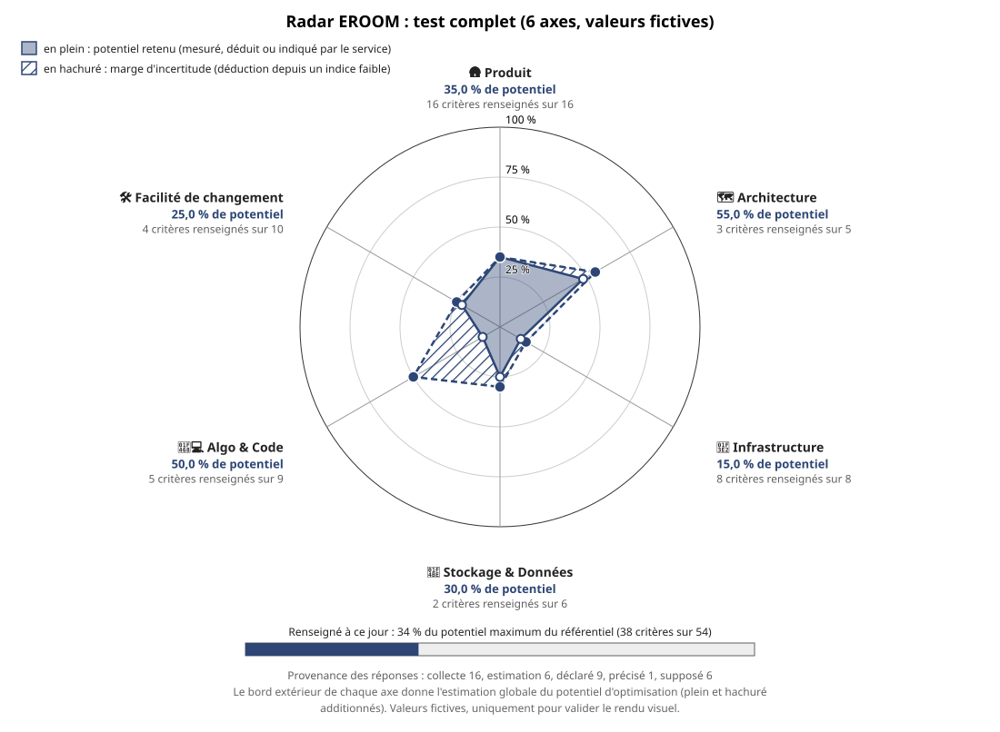
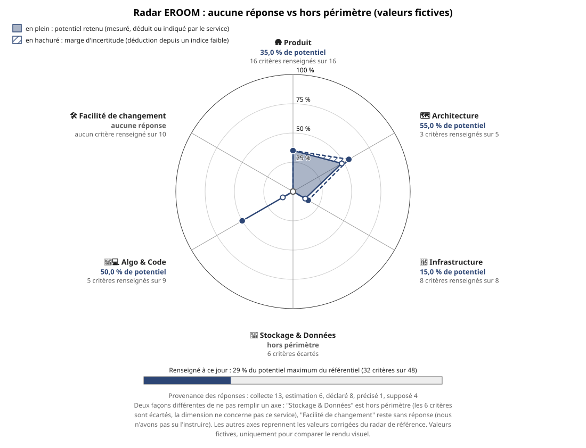

Par rapport au radar de référence, deux axes ont été vidés ici, chacun selon un cas différent : "Stockage & Données" (30 % dans la référence) devient hors périmètre (nous savons qu'il ne concerne pas ce service), et "Facilité de changement" (25 % dans la référence) devient sans réponse (nous n'avons pas su l'instruire). Les deux axes sont vides (pincés au centre), mais le radar affiche un libellé différent sous chacun.

Constat pour la décision à prendre sur le chantier 22 : le radar distingue déjà les deux notions par le texte sous l'axe ("aucune réponse" vs "hors périmètre"), mais pas par une couleur ou une forme différente — un lecteur pressé qui ne lit que la figure peut les confondre visuellement. À garder en tête si vous voulez pousser la distinction plus loin que le texte.